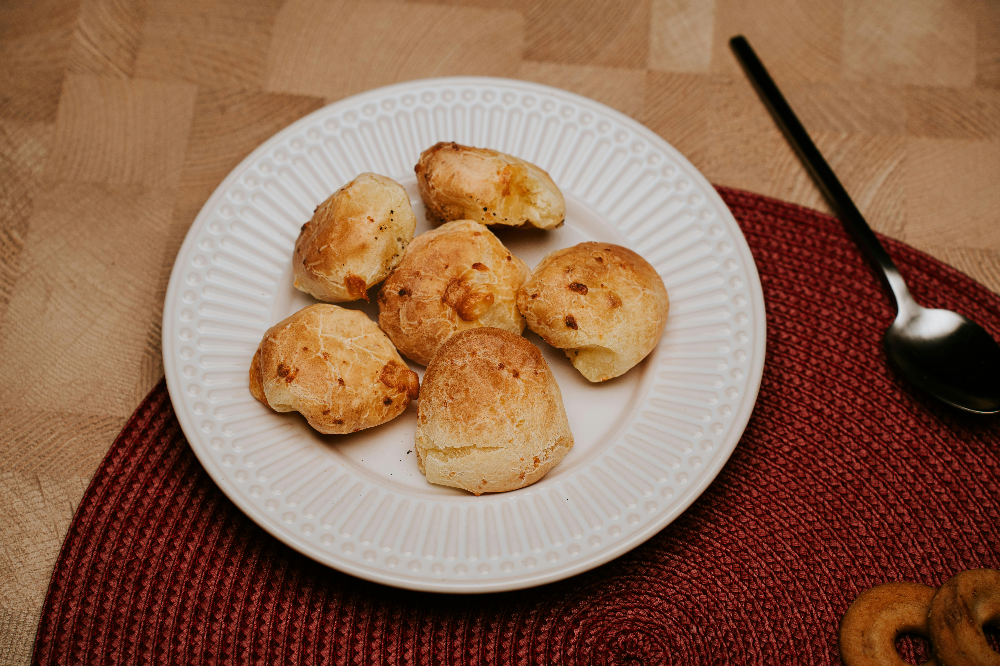

Pão de Queijo recipe
Home

Brazilian cheese bread, known as pão de queijo, is a traditional recipe from Brazil made with tapioca flour and cheese.
It is famous for its crispy exterior and soft, chewy interior.
The dough is naturally gluten-free and is prepared by scalding the flour with hot milk and oil, which gives the bread its unique texture.
Pão de queijo is commonly served warm and is eaten at breakfast or as a snack throughout the day.
Igredients:
- 500 g sour tapioca flour
- 250 ml milk
- 100 ml vegetable oil
- 1 teaspoon salt
- 2 eggs
- 200–300 g grated cheese (semi-cured cheese or Parmesan)
Steps:
- In a saucepan, heat the milk, oil, and salt until it boils.
- Place the tapioca flour in a bowl and pour the hot liquid over it. Mix well.
- Let the dough cool until warm, then add the eggs one at a time, mixing well.
- Add the grated cheese and mix until the dough is sticky but workable.
- Shape small balls with greased hands.
- Bake in a preheated oven at 180–200°C (350–390°F) for 20–30 minutes, until golden.